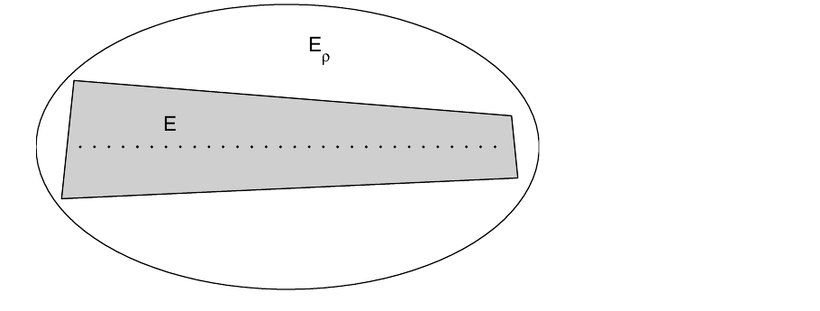
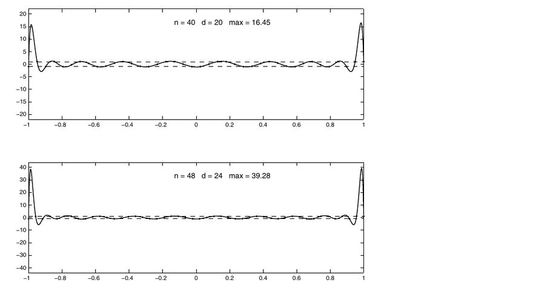

Impossibility of Fast Stable Approximation from Equispaced Samples
Cliff notes for Platte, Trefethen, and Kuijlaars, SIAM Review 2011, with the implications for our EuRoC gyro/accel spectral fits.
One-Screen Takeaway
The paper says there is a fundamental tradeoff for approximation from equispaced samples: if a method converges exponentially fast for analytic functions, then it must be exponentially ill-conditioned. To stay stable, one generally gives up full exponential convergence and accepts something closer to root-exponential behavior.
For our IMU windows this is directly relevant: gyro and accel are sampled uniformly in time, and our current Chebyshev/Chebyshev2 fits solve a global least-squares problem on those uniform samples. Chebyshev basis functions improve the coordinate system, but they do not magically give us Chebyshev-spaced observations.
Practical conclusion: the endpoint wiggles you saw are not surprising. They are the kind of instability this paper warns about when one asks a high-order global approximant to explain equispaced data, especially near interval endpoints.
Why Chebyshev Points Help, and Why That Is Not What We Are Doing
| Case | What the paper says | Relation to our spectrogram code |
|---|---|---|
| Polynomial interpolation at Chebyshev points | Stable and geometrically convergent for analytic functions because the sample points cluster near the interval ends. | Not our data layout. EuRoC IMU samples are uniform in time. |
| Polynomial least squares from equispaced samples | Much better than interpolation, but stable degrees are limited. The paper summarizes the safe scaling as roughly d = O(sqrt(n)). |
This is close to our current setup: uniform samples, global basis matrix, least-squares solve. |
| Chebyshev basis on equispaced samples | The basis is well behaved, but the observation grid still controls the stability tradeoff. | Our Chebyshev1 path evaluates basis functions at uniformly spaced coordinates; Chebyshev2 uses CGL-like unknowns, but residuals are still at uniform timestamps. |
| Fourier basis on one-second windows | Fourier methods are stable and fast for periodic analytic functions. Nonperiodic endpoints create Gibbs-type behavior. | A one-second IMU segment is not periodic, so Fourier can ring at boundaries too. |
The Main Theorem in Plain Language
The paper defines an approximation procedure that only sees values on an n-point equispaced grid. The method can be linear, nonlinear, polynomial, rational, adaptive, or anything else. If it promises uniform exponential accuracy for analytic functions, then its condition number must grow exponentially.
A more nuanced version says that convergence like C^(-n^tau) with tau > 1/2 still forces growing instability. The stability boundary is therefore around root-exponential convergence, not full exponential convergence.
Two Figures Worth Keeping in Mind


What This Means for Our EuRoC Fits
Risk Degree near the stability threshold
At 200 Hz, a closed one-second interval has about n = 201 samples, so sqrt(n) ≈ 14.2. A fit with N = 16 Chebyshev coefficients has degree 15. That is already near the paper's least-squares stability scaling, before considering noise or real dynamics.
Risk IMU data is noisy and not analytic
The theorem is about analytic functions, which is a more favorable case than raw gyro/accel. Sensor noise and high-frequency motion give high-order coefficients something to chase, and endpoints have high leverage.
Detail Chebyshev2 is not a cure by itself
Chebyshev2 pseudo-spectral parameters can represent values at clustered CGL nodes, but if the residuals are still measured at uniform IMU timestamps, the fit is still an equispaced-sample least-squares problem.
Useful Interior estimates are safer
The paper explicitly distinguishes uniform accuracy on the whole interval from behavior on interior subintervals. Padding each window and only using the center is mathematically aligned with that distinction.
Actionable Options
- Lower the degree for raw gyro/accel. For one-second 200 Hz windows, keep
Naround 6-12 unless regularization is active. - Add a ridge or derivative penalty. Penalize high-order basis coefficients so least squares cannot spend them freely on endpoint noise.
- Use overlapping padded windows. Fit on a larger interval, display or use only the center portion, and let adjacent windows cover the discarded edges.
- Try true CGL collocation as a separate experiment. Resample the uniform IMU data to Chebyshev-Lobatto times and fit/interpolate there. This tests the Chebyshev-node story directly, but it still needs smoothing for noisy data.
- Compare by diagnostics, not just plots. Track condition number, high-order energy ratio, endpoint residual ratio, and center-only RMSE versus
N, basis, and window length.
What the Paper Does Not Claim
- It does not say equispaced data is unusable. It says we cannot have every desirable property at once: full spectral speed, uniform endpoint accuracy, and stability.
- It does not rule out good practical algorithms. The authors explicitly mention regularization, rational methods, conformal maps, subinterval methods, and hybrid approaches as useful in finite regimes.
- It does not say Chebyshev bases are bad. It says the sampling grid matters. Chebyshev clustering helps when the data are actually acquired or collocated at clustered points.
Bottom Line for the Attached Endpoint Plot
The plot is not evidence that Chebyshev theory failed. It is evidence that we are fitting uniform noisy samples with a global, unregularized approximant. The paper predicts exactly this kind of tension: if we push degree high enough to get a very expressive fit from equispaced samples, stability and boundary behavior become the cost.
Figure excerpts are included from the local PDF for private technical review; this report paraphrases the paper rather than reproducing it.